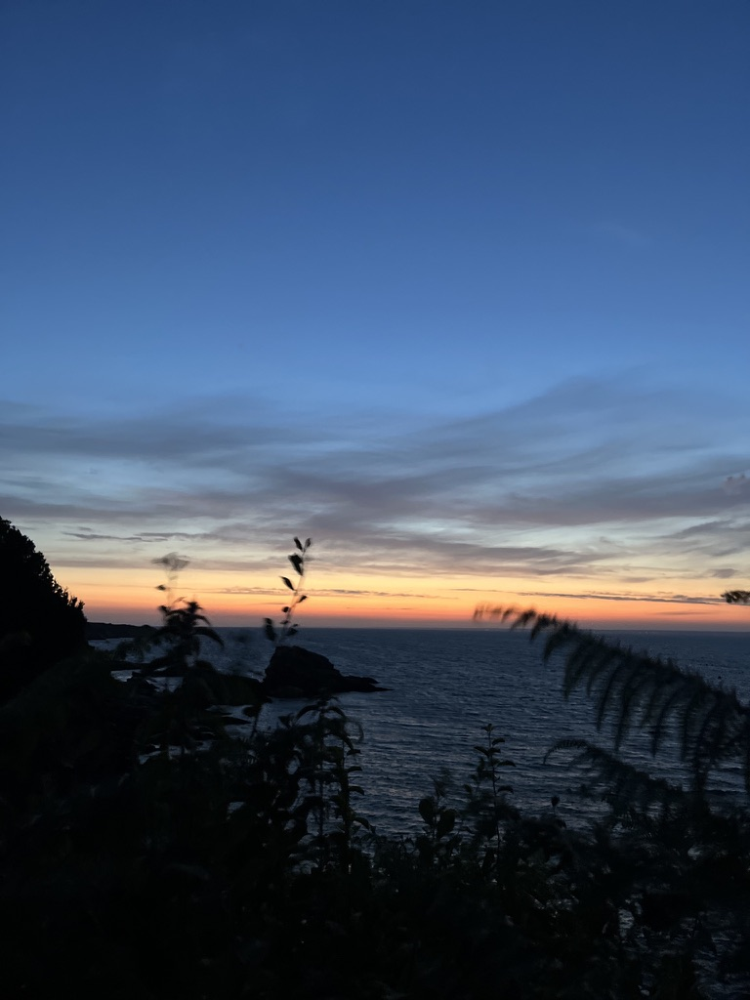

Communication autour de la préservation des milieux aquatiques.
Contexte
Traduire un enjeu écologique en langage visuel clair
Le projet demandait de relier pédagogie, émotion et impact visuel. L'objectif n'était pas de rendre le sujet plus lourd, mais plus lisible et plus engageant.
Conception visuelle du projet puis déclinaison web.
Affiche et univers graphique cohérent autour du thème de l'eau.

Le visuel principal comme point d'entrée du message.
Direction
Créer de l'attention sans faire “campagne scolaire”
J'ai cherché un équilibre entre matière, clarté et impact. Le projet devait rester accessible, mais assez incarné pour ne pas ressembler à une sensibilisation générique.
- Palette aquatique et contrastes volontairement maîtrisés.
- Composition simple pour faire passer le sujet vite.
- Continuité entre visuel statique et intégration écran.
Point clé
Le message devait rester engagé sans tomber dans un registre trop littéral ou trop chargé.
Matières
Deux appuis visuels pour construire l'univers

Conception graphique du projet puis mise en forme front-end pour prolonger la cohérence visuelle.
Ce projet m'a appris à simplifier un message engagé sans lui faire perdre sa présence visuelle.